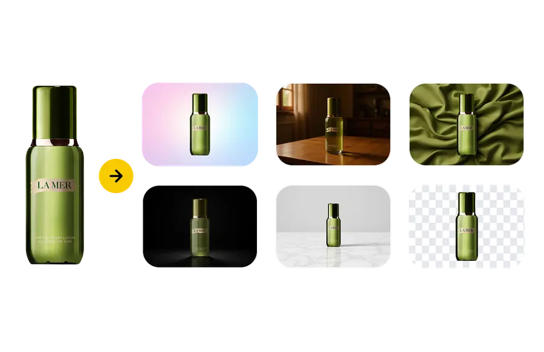

RoboNeo 实测：把抠图、换景、视频迁移全塞进一个订阅，值不值？
AI 图像工具赛道已经挤得水泄不通，RoboNeo 选择了一条不太一样的路——不做全能模型比拼，而是把高频的创作环节做成了专用工具。实测下来，它在抠图换景、视频动作迁移这几个场景的完成度，确实比通用工具省心不少。
AI 图像工具这两年卷成了什么样子，大家心里都有数。Stable Diffusion 生态的模型堆到几千个，Midjourney 一个月改三次定价，大厂们也在自家云里塞进了生成式 AI 模块。在这种格局下，去 RoboNeo官网 看一眼你就会发现，它不是那种靠"最强文生图模型"打天下的选手——它走的是另一条路：把高频、刚需、但通用工具做不好的环节，拎出来做成一个个专用小工具，打包进一个订阅里。
定位：它在同类里排什么位置
坦白说，RoboNeo 不是给那种要跑 LoRA 训练、折腾 ComfyUI 节点流的重度玩家准备的。那个群体有自己的生态，付费习惯和需求曲线完全不同。RoboNeo 的目标用户很明确：电商运营要批量做白底主图、自媒体想给视频换个角色、设计助理需要快速抠出几十张人像——这些人需要的是"一分钟出活"，不是"花三小时调参数然后再花一小时找 VAE"。
这个定位决定了它在同类工具里的位置：比专门做抠图的在线工具强（因为不止抠图），比通用多模态平台省心（因为不用自己写提示词），比大厂云服务便宜（按积分计费，不用签企业合同）。中间档位，精准卡位。
差异化：两个别家没做透的点
专用模板而不是通用工作台
几乎所有 AI 图像平台都给你一个"工作台"：一个提示词框、几个模型下拉、一个种子号。然后你得自己摸——这个模型出人像好看但出产品会崩，那个模型支持参考图但要写特定的参数语法。对熟练玩家来说这是自由，对 80% 的普通用户来说这是门槛。
RoboNeo 的做法反着来：每个场景一个专用工具。你要换视频里的人物动作？打开 Genjutsu AI，上传原视频，拖一张新角色照片，选模型，完事。提示词预填了，参数简化到三四个，连积分消耗都明明白白标在按钮上。文档里说 Seedance 2.0 Mini 是 80 积分起，我实测了一下，5 秒视频大概 30 秒出结果，面部稳定性比我用通用工作台调了十分钟的还好。
这种"专用模板"的思路不新鲜，但 RoboNeo 是我见过落地最彻底的一个——从抠图到产品摄影到贴纸生成到视频迁移，每个环节都是独立的小工具，没有一个需要你从零开始搭。好处是上手几乎零成本，坏处是你很难用它做模板之外的事。
抠图换景的一体化完成度
抠图工具市面上一抓一大把，但"抠出来再换个像样的背景"这一步，绝大多数工具都做得很敷衍。要么让你自己去 Photoshop 贴背景，要么给你几个丑得没法用的纯色选项。RoboNeo 把这两步打通了，而且打通的质量出乎意料。
它给的四种模式里，我最常用的是"预设风格"——大理石、木纹、织物、自然虚化这些，不是随便贴一张纹理图上去。文档里没说具体技术，但从效果看，新背景的光线和透视是根据主体自动匹配的，不会出现"人物悬浮在空中"的违和感。我拿一张产品图试了木纹背景，桌面上居然自动生成了柔和的投影，看起来像是真的在木桌上拍的。

更贴心的是边缘处理的 RoboNeo文档 写得非常细——头发怎么拍能减少光晕、逆光为什么会翻车、透明物体为什么别指望完美。这些经验性的东西，别家要么写得很敷衍要么根本不写。对于头发和毛发这种公认的难点，它甚至直接告诉你"接受 AI 的局限，不行就换照片"——这种实话在宣传文案里很少见，反而让人觉得靠谱。
取舍：为这些优势付出了什么
灵活度换来了省心
专用工具的代价就是你被锁死在模板里。Genjutsu AI 能做动作迁移，但你想同时改背景和风格？不行，那得跳到另一个工具，积分重新算。Create 工作台也有，但参数比专用工具复杂得多，基本上把之前省下来的学习成本又补回来了。如果你有一天想做点"不在菜单上"的事，RoboNeo 会显得很笨重。
平台和模型的绑定
RoboNeo 底层用的是 Seedance 系列模型，文档里写的是 2.0 Mini / Fast / 2.5 三个档位。这意味着它的上限就是 Seedance 的上限——如果明天有个更强的视频模型出来，RoboNeo 什么时候跟上、会不会跟上，取决于它的合作节奏而不是你的选择。对比之下，用开源工具你可以第一时间换任何新模型。
积分计费的隐性门槛
从 RoboNeo下载 拿客户端或者直接用网页端都行，首次注册送 10 次免费积分，够体验一次完整流程。但正式用起来，抠图 10 积分一次，Genjutsu AI 最低 80 积分起，反复测试不同组合的话，积分消耗比想象中快。好在生成失败自动退积分，这一点做得不错，但积分制本身意味着你需要对成本有感知——不像订阅制那样放开来用。
选购结论：谁该选 RoboNeo
如果你是下面这些人，RoboNeo 值得试一下：
- 电商运营 / 淘宝美工：批量做白底主图、换背景、产品变体测试，这几个动作 RoboNeo 一套工具就搞定，而且边缘质量直接能用
- 短视频创作者：想给一段舞蹈视频换三个角色分别发，或者给产品广告换不同市场的展示版本，Genjutsu AI 的动作迁移比你从零生成一段新视频省太多事
- 自媒体 / 社媒运营：需要快速做头像、贴纸、社媒配图，不想装一堆修图软件
如果你是下面这些人，可能更适合别的：
- 深度玩家 / ComfyUI 用户：你要的是可控性和可定制性，RoboNeo 的模板化对你来说是束缚
- 企业用户：需要批量处理 + API 接入 + 团队管理，大厂云服务的企业方案可能更合适
- 免费党：虽然有免费积分，但长期用肯定要付费，开源生态才是你的主场
最后说一句——RoboNeo 最打动我的不是某个功能有多强，而是它在"把工具做简单"这件事上的诚意。很多 AI 产品为了显得专业，把界面做得像航天飞机驾驶舱；RoboNeo 反其道而行之，每个工具就三五个按钮，文档里甚至直接告诉你哪些情况别指望 AI 完美处理。这种务实，在现在的 AI 泡沫里反而成了稀缺品。
对大多数只想把活干完的人来说，这种稀缺品比多一个模型参数更有价值。
RoboNeo 的这套资料我顺手同步到了三个代码仓库，方便不同地区的朋友按需取用：GitHub 上是完整版本，国内访问 Gitee 和 GitCode 速度会更快一些。